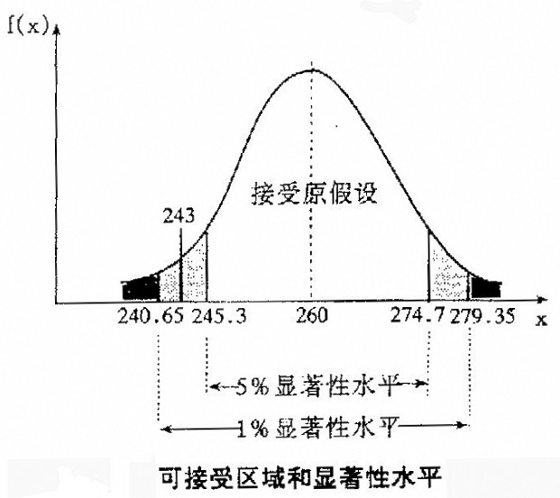

在日常的统计分析中，标准差和标准误是一对十分重要的统计量，两者有区别也有联系。但是很多人却没有弄清其中的差异，经常性地进行一些错误的使用。对于标准差与标准误的区别，很多书上这样表达：标准差表示数据的离散程度，标准误表示抽样误差的大小。这样的解释可能对于许多人来说等于没有解释。
其实这两者的区别可以采用数据分布表达方式描述如下：如果样本服从均值为μ，标准差为δ的正态分布，即X～N(μ, δ2),那么样本均值服从均值为0，标准差为δ2/n的正态分布，即～ N(μ,δ2/n)。这里δ为标准差，δ/n1/2为标准误。明白了吧，用统计学的方法解释起来就是这么简单。
可是，实际使用中总体参数往往未知，多数情况下用样本统计量来表示。那么，关于这两者的区别可以这样表述：标准差是样本数据方差的平方根，它衡量的是样本数据的离散程度；标准误是样本均值的标准差，衡量的是样本均值的离散程度。而在实际的抽样中，习惯用样本均值来推断总体均值，那么样本均值的离散程度（标准误）越大，抽样误差就越大。所以用标准误来衡量抽样误差的大小。
1.概念与意义
显著性水平a，是在原假设成立时，检验统计量值落在某个极端区域的概率值。因此，若取α= 0.05，如果计算出的p值小于α ，则可认为原假设是一个不可能发生的小概率事件。当然，如果真的发生了，则犯错误的可能性为5%。显然，显著性水平反映了拒绝某一原假设时所犯错误的可能性，或者说，α是指拒绝了事实上正确的原假设的概率。
2.显著性水平a，取多大才合适？
显著性水平α值一般在进行假设检验前由研究者根据实际的需要确定。

常用的取值是0.05，0.01及0.1。
对于前者，相当于在原假设事实上正确的情况下，研究者接受这一假设的可能性为95%；对于中间者，则研究者接受事实上正确的原假设的可能性为99%；后者，接受的可能性为90%。一般最常用的0.05和0.01，医学类大多采用0.01。
显然，降低α值可以减少拒绝原假设的可能性。因此，在报告统计分析结果时，必须给出α值。
3.SPSS中的实际应用
显著性水平a值表现为SPSS在数据结果中输出的Sig值。假设检验运用了小概率原理，事先确定的作为判断的界限，即允许的小概率的标准，称为显著性水平，它把概率分布分为两个区间：拒绝区间，接受区间。